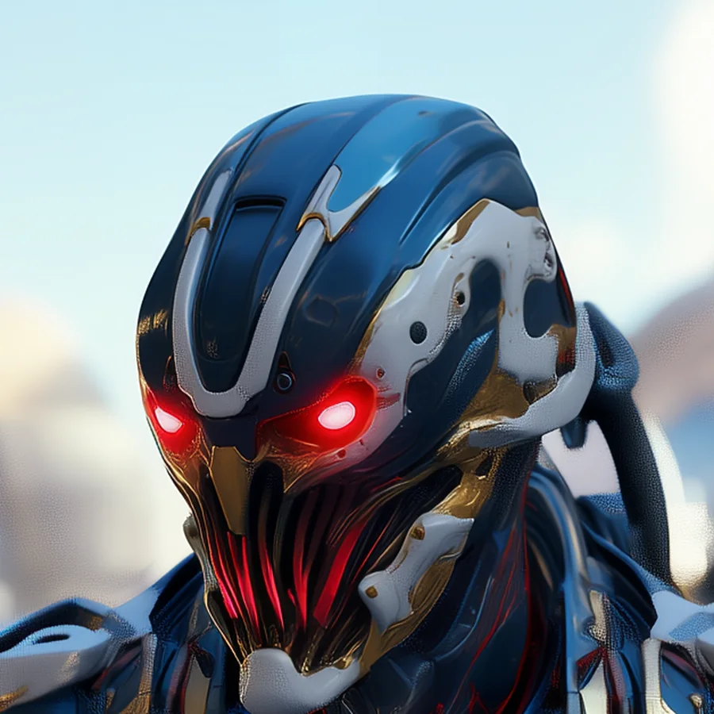
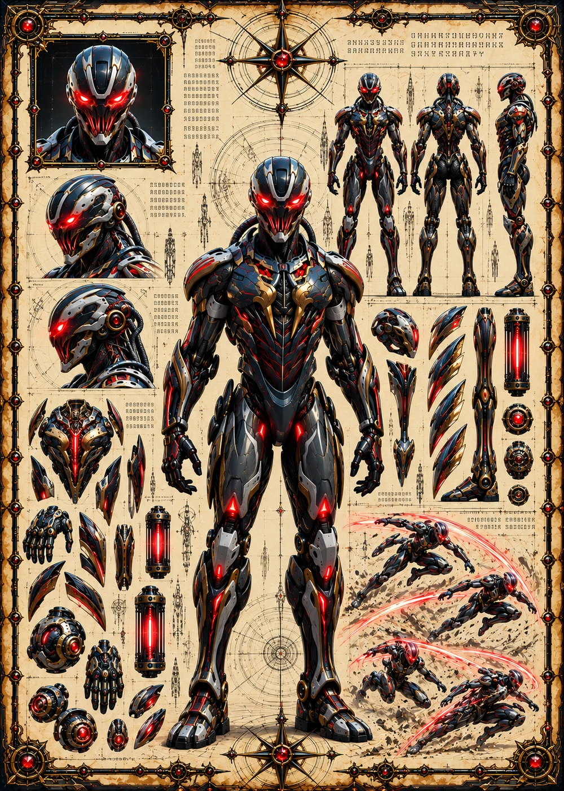

©
©
GENEZYS ARCHIVE · Earth 2 · Synthbot
Delitz
Ruin Artificer

Archive record
Delitz builds weapons out of ruins and turns everything else into ruins. The Unravel Torrent drains and wounds every enemy, slowly, round after round. Among the Grim Corsairs, Delitz makes sure that nothing taken is ever thrown away.
Combat signature
Unravel Torrent
150 Cosmara
240 Animus
280 Vitalis
Floods with integrating cascade: Reduces all enemies' Cosmara by 10 and deals 20 damage to all for 3 rounds.
Genezys 06:06 ™&©2026LEGIONS
